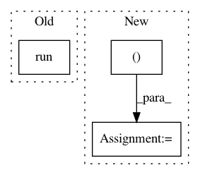

afe7121893302a869628802432c34866a1b38bb3,softlearning/misc/plotter.py,QFPolicyPlotter,_plot_level_curves,#QFPolicyPlotter#,46
Before Change
// inputs.
self.Q_op = self._Q(self._Q.inputs)
Q_np = tf.keras.backend.get_session().run(
self.Q_op, feed_dict={
self._Q.inputs[0]: observations,
self._Q.inputs[1]: actions,
})
// Q_np = self._Q.predict((observations, actions))
Q_np = np.reshape(Q_np, xgrid.shape)
cs = ax.contour(xgrid, ygrid, Q_np, 20)
After Change
observations = np.tile(
obs[None].astype(np.float32), (actions.shape[0], 1))
Q_np = self._Q.predict((observations, actions))
Q_np = np.reshape(Q_np, xgrid.shape)
cs = ax.contour(xgrid, ygrid, Q_np, 20)
self._line_objects += cs.collections
In pattern: SUPERPATTERN
Frequency: 3
Non-data size: 3
Instances
Project Name: rail-berkeley/softlearning
Commit Name: afe7121893302a869628802432c34866a1b38bb3
Time: 2018-11-23
Author: hartikainen@berkeley.edu
File Name: softlearning/misc/plotter.py
Class Name: QFPolicyPlotter
Method Name: _plot_level_curves
Project Name: rail-berkeley/softlearning
Commit Name: 459441e166ebcd176698041e260d4f467652e7ac
Time: 2018-07-21
Author: kristian.hartikainen@gmail.com
File Name: softlearning/policies/latent_space_policy.py
Class Name: LatentSpacePolicy
Method Name: get_actions
Project Name: rail-berkeley/softlearning
Commit Name: b2be6dc53ca9328e7b4b29ddd5cc8c0d45b2f414
Time: 2018-06-21
Author: kristian.hartikainen@gmail.com
File Name: examples/mujoco_all_ray.py
Class Name:
Method Name: run_experiment